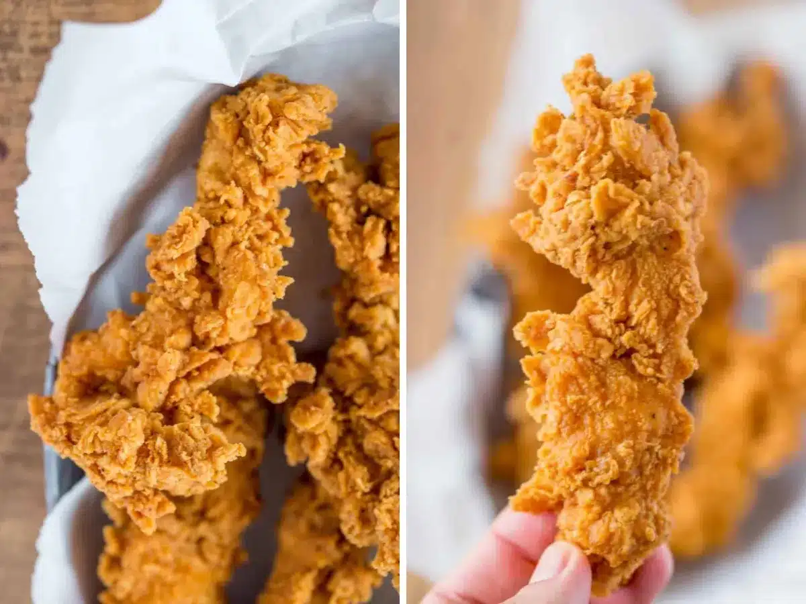

Tenders chicken Recipe

Description
Super Crispy Chicken Tenders are a classic kid favorite made at home instead of the drive-thru. Enjoy them dipped into your favorite sauces!
Ingredients
- 4 chicken breasts , boneless, skinless
- 1 cup buttermilk
- 1 teaspoon hot sauce
- 2 large eggs , beaten
- 2 cups flour
- 2 ½ teaspoons kosher salt
- ¾ teaspoon coarse ground black pepper
- ⅛ teaspoon paprika
- ⅛ teaspoon garlic powder
- ⅛ teaspoon baking powder
- vegetable oil , for frying
Instructions
- Cut the chicken breasts into four tenders each and soak them in a bowl with the buttermilk and hot sauce for 30 minutes.
- Add the eggs to one bowl and the flour and spices to a second bowl.
- Dip each piece of chicken from the buttermilk bowl to the flour mixture.
- Dip it into the eggs then back into the flour mixture.
- Shake excess flour gently off and put the chicken onto a baking sheet.
- Repeat with all the pieces.
- Heat the oil (three inches deep) in a Dutch oven on medium-high heat to 350 degrees.
- Fry the chicken in small batches for 5-7 minutes or until golden brown.
Home